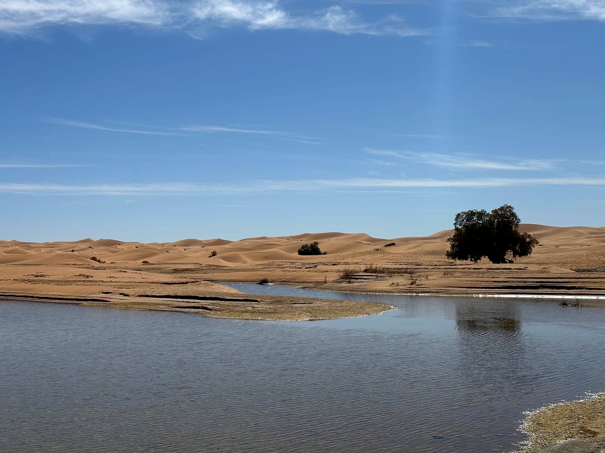

Why Timing Matters in the Sahara
Unlike the coast or the Atlas Mountains, the Sahara around Merzouga and the Erg Chebbi dunes has almost no cloud cover or vegetation to soften the temperature swing between day and night. That means the "best" time to visit isn't just about avoiding rain — it's about avoiding the desert's harshest heat while still catching clear skies for stargazing and a comfortable camel trek at sunset.
Morocco's Sahara Desert by Season
Spring (March to May)
One of the two best windows to visit. Daytime temperatures sit comfortably between 20-30°C, nights are cool but rarely uncomfortable, and the light across the dunes in the late afternoon is exceptional for photography.
Autumn (September to November)
The other prime window, and arguably the most popular time to travel — the punishing summer heat has broken, days are warm and dry, and the desert camps are in full swing after the quieter summer months.
Summer (June to August)
The Sahara is genuinely extreme in summer, with daytime highs regularly passing 40-45°C. It's still possible to visit — camel treks are timed for sunset and sunrise when it's cooler, and desert camps are quieter — but this season suits travelers who handle heat well rather than first-time visitors.
Winter (December to February)
Days are pleasant and mild, often 18-22°C, but nights at camp can drop close to freezing. Pack proper layers (see our packing guide below) and winter rewards you with some of the clearest night skies of the year for stargazing.
The Best Months for Merzouga & Erg Chebbi
If you can choose freely, aim for late March to early May or late September through November. These windows give you warm, dry days, cool but manageable nights, and the golden, low-angle light that makes the Erg Chebbi dunes look their most dramatic at sunrise and sunset — exactly when your camel trek and desert camp arrival are timed.

What About Ramadan?
Morocco observes Ramadan, and dates shift each year on the Islamic calendar. Private tours run as normal throughout — your driver-guide, hotels, and desert camps all continue operating — but some local restaurants keep shorter daytime hours. If your trip falls during Ramadan, let us know when you enquire and we'll build that into your itinerary.